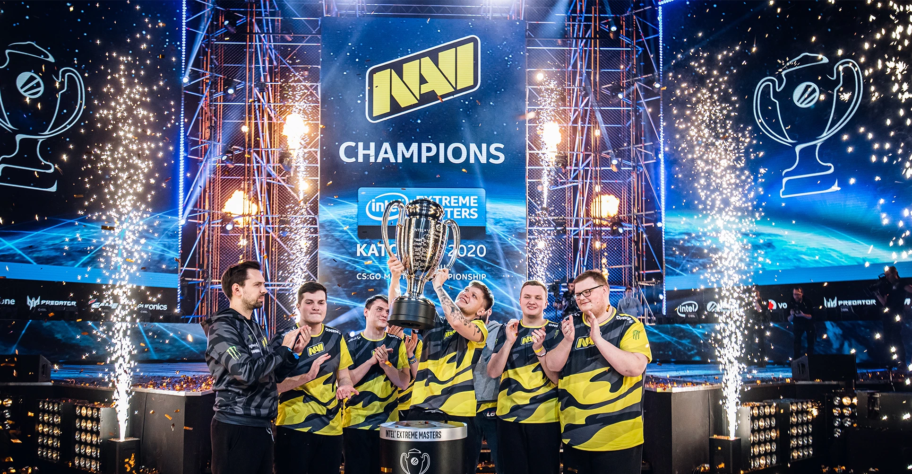
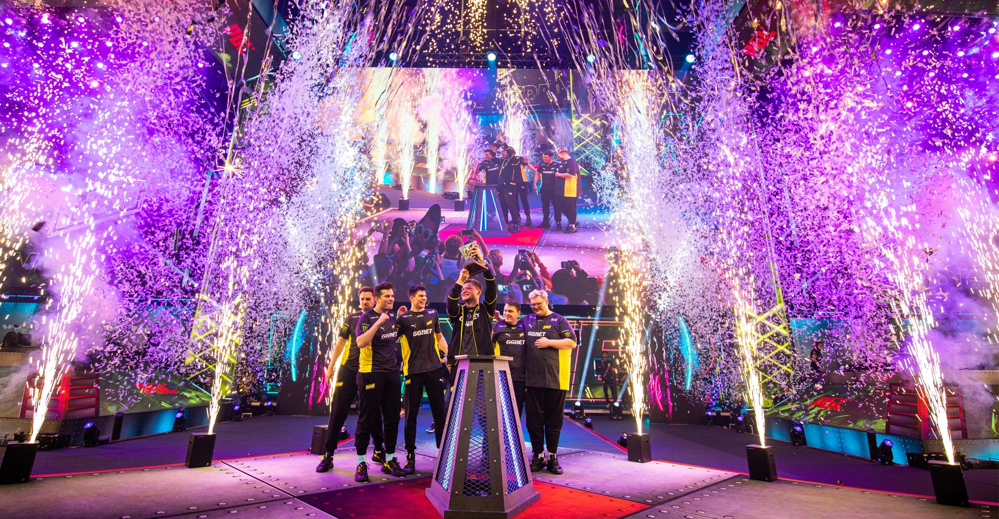
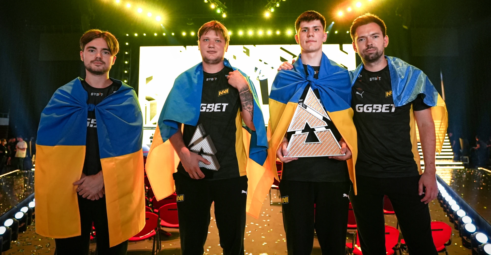
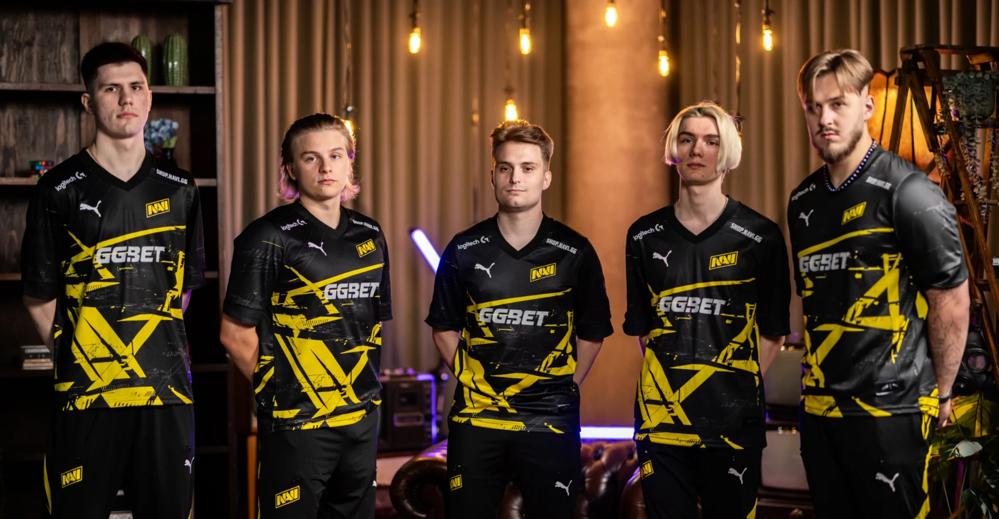
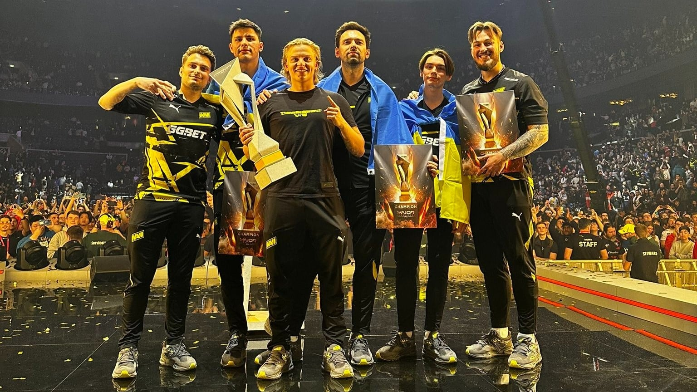

Історія NAVI
Наша команда розпочала свою подорож у світі кіберспорту в 2020 році. За цей час ми досягли великих результатів, брали участь у численних турнірах і створили неперевершену атмосферу для наших фанатів.
Створення команди
У 2020 році ми об'єдналися в одну команду, щоб виступати на найвищому рівні. Це був початок великої подорожі, яка привела нас до численних перемог.
Перша перемога на турнірі
Наші зусилля увінчались першою великою перемогою на міжнародному турнірі, що стало поштовхом для подальшого розвитку команди.
Вихід на міжнародний рівень
В 2022 році ми почали брати участь у найпрестижніших турнірах світу, здобуваючи визнання серед провідних команд.
Вихід на міжнародний рівень
2023-й рік видався насиченим для NAVI: ми перейшли на нову версію Counter-Strike та суттєво оновили ростер, розширили кількість європейських складів, а також відкрили підрозділи в кількох нових дисциплінах.
Наша команда сьогодні
Сьогодні ми є однією з провідних команд у CS2, продовжуючи досягати нових вершин і радувати наших шанувальників.
